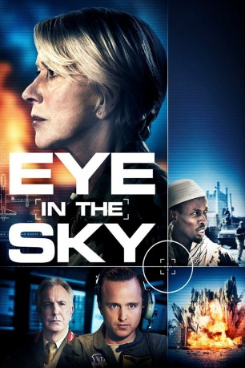
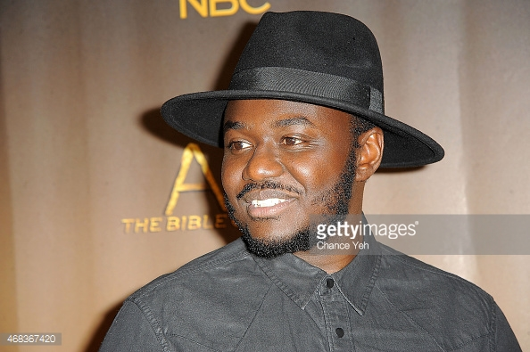
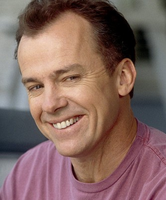
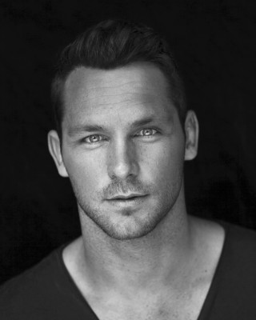

#4341 Eye in the Sky
 
 IMDB-Wertung: 7.3 / 10
IMDB-Wertung: 7.3 / 10  Metascore: 0
Metascore: 0 
Colonel Katherine Powell ist Kommandantin einer Drohnen-Operation in Nairobi. Von ihrer Einsatzzentrale aus versucht sie Terroristen aufzuspüren und auszuschalten – ohne selbst vor Ort sein zu müssen. Ihr Kollege Steve Watts ist ebenfalls nicht vor Ort, lenkt die Waffe allerdings per Fernsteuerung an Powells gewünschtes Ziel. Bei ihrer Suche nach kriminellen Machenschaften stoßen Powell und Watts auf zwei mutmaßliche Terroristen, die in einem Haus in Kenia einen Anschlag planen, der zahlreiche Menschen in Gefahr bringen wird. Zunächst ist das Kommando klar: ausschalten. Als allerdings ein vermeintlich völlig unschuldiges Mädchen die Szenerie betritt, sind sich die Menschen hinter den schweren Waffen nicht mehr sicher, wie sie weiter handeln sollen. Innerhalb kürzester Zeit wird die Frage nach Leben und Tod zu einem politischen Großereignis.
Jahr: 2015
Dauer: 102 Minuten
FSK: 16
Land: England Studio: UFATonspuren: DTS - ,
Untertitel: Deutsch,
Auflösung: 1080p (1920x808) Größe: 5222 MB
Genre: Drama, Thriller, Krieg
Regisseur: Gavin Hood
Drehbuch: Jennifer Kent
Soundtrack:
Darsteller:
 Helen Mirren als Colonel Katherine Powell
Helen Mirren als Colonel Katherine Powell Aaron Paul als Steve Watts
Aaron Paul als Steve Watts-  Babou Ceesay als Sergeant Mushtaq Saddiq
- Carl Beukes als Sergeant Mike Gleeson
 Alan Rickman als Lieutenant General Frank Benson
Alan Rickman als Lieutenant General Frank Benson Phoebe Fox als Carrie Gershon
Phoebe Fox als Carrie Gershon- Gavin Hood als Lieutenant Colonel Ed Walsh
 Kenneth Fok als First Crewman
Kenneth Fok als First Crewman- Zak Rowlands als Second Crewman - K. Moore
- Ebby Weyime als Damisi
- Francis Chouler als Jack Cleary
 Richard McCabe als George Matherson
Richard McCabe als George Matherson Jeremy Northam als Brian Woodale
Jeremy Northam als Brian Woodale- Monica Dolan als Angela Northman
- Kim Engelbrecht als Lucy Galvez
- James Gracie als Image Analyst
 Barkhad Abdi als Jama Farah
Barkhad Abdi als Jama Farah- Lex King als Susan Danford / Ayesha Al-Hady
 Iain Glen als James Willett
Iain Glen als James Willett- Jessica Jones als Kate Barnes
- Daniel Fox als Tom Bellamy
-  Michael O'Keefe als Ken Stanitzke
 Laila Robins als Ms. Jillian Goldman
Laila Robins als Ms. Jillian Goldman- Armand Aucamp als Airman , uncredited
-  Tyrone Keogh als Sammy , uncredited
- Meganne Young als Lizzy , uncredited
- Faisa Hassan als Fatima Mo'Allim
- Aisha Takow als Alia Mo'Allim
- Armaan Haggio als Musa Mo'Allim
- Bob Chappell als Simon Powell
- Alex Gallafent als Reporter
- Kate Liquorish als Female Sergeant
- Richard Stephenson als Staff Sergeant
- Gabriella Pinto als Female Corporal
- Tylan Wray als Male Corporal
- Hossain Dahir als Driver One
- Mondé Sibisi als Muhammad Abdisalaam
- Warren Masemola als Agent Atieno
- Ahmed Mohamed Ali als Omar
- Lemogang Tsipa als Matt Levery
- Paul Spauling als Command Support Staff
- Henry Pilime als Parklands Gate Guard
- Sammy Maina als Parklands Gate Guard
- Hassan Abdullah als Shahid Ahmed
- Vusi Kunene als Major Moses Owiti
- Mohammed Ali Sahra als Militia Leader
- Chaltu Ahmed als Poor Woman
- Ed Suter als Benson's Aide-De-Camp
- Roberto Meyer als Rasheed Hamud
- Omar Abu Kadir als Driver Two
Datei: X:\2015(A-F)\Eye in the Sky (2015, FSK16, 1920x808).mkv seit 12.09.2016
Festplatte: HD 2015(A-Z)
 Es gibt insgesamt 143 Filme in der Gruppe '2015(A-F)'
Es gibt insgesamt 143 Filme in der Gruppe '2015(A-F)'